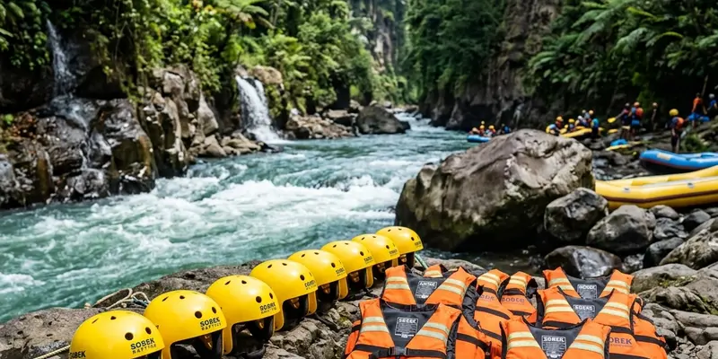

Rute rafting Kaliwatu menyusuri sekitar tujuh kilometer aliran Sungai Brantas dengan tingkat kesulitan menantang karena arus deras dan banyak bebatuan besar di sepanjang jalur pengarungan.
Ringkasan Inti
- Rute rafting Kaliwatu berjarak sekitar tujuh kilometer di sepanjang Sungai Brantas.
- Durasi pengarungan umumnya berkisar 30 menit hingga satu jam tergantung kondisi debit air.
- Arus deras dan bebatuan besar menjadi tantangan utama sepanjang jalur rafting.
- Terdapat titik jeda di tengah rute untuk beristirahat atau berenang sejenak.
- Tingkat kesulitan rafting Kaliwatu tergolong menengah hingga menantang bagi peserta.
Bagaimana Rute Rafting Kaliwatu dari Titik Awal hingga Akhir?
Rute rafting Kaliwatu dimulai dari titik keberangkatan di kawasan Desa Pandanrejo, Bumiaji, kemudian menyusuri aliran Sungai Brantas sepanjang sekitar tujuh kilometer hingga mencapai titik akhir pengarungan di area yang lebih tenang.
Sepanjang rute tersebut, peserta akan melewati berbagai segmen sungai dengan karakteristik arus yang berbeda-beda, mulai dari jeram dengan arus deras hingga segmen yang lebih tenang di mana pemandu biasanya memberikan waktu jeda bagi peserta untuk beristirahat sejenak sebelum melanjutkan perjalanan.
Seberapa Sulit Tingkat Kesulitan Rafting Kaliwatu bagi Peserta?
Tingkat kesulitan rafting Kaliwatu tergolong menengah hingga menantang bagi peserta, mengingat karakteristik sungai ini dikenal memiliki arus yang relatif deras serta banyak bebatuan besar yang menambah sensasi arung jeram sepanjang perjalanan.
Bagi peserta yang belum pernah mencoba rafting sebelumnya, tingkat kesulitan ini tetap dapat dihadapi dengan bantuan pemandu berpengalaman yang akan memberikan arahan mengenai teknik mendayung dan cara menghadapi jeram di sepanjang jalur sungai.

Tantangan lintasan arus deras dan bebatuan di sepanjang rute pengarungan rafting Kaliwatu.
Apa Tantangan Utama yang Dihadapi Peserta di Sepanjang Jalur Rafting Kaliwatu?
Tantangan utama yang dihadapi peserta di sepanjang jalur rafting Kaliwatu meliputi arus sungai yang tiba-tiba menguat pada segmen tertentu, serta banyaknya bebatuan yang mengharuskan peserta dan pemandu mengambil keputusan cepat dalam mengarahkan perahu.
Tantangan lain yang umum dirasakan peserta selama pengarungan:
- Menjaga keseimbangan perahu saat melewati jeram dengan arus deras.
- Koordinasi mendayung bersama tim agar perahu tetap terkendali di jalur sempit.
- Menyesuaikan diri dengan perubahan kecepatan arus yang terjadi secara mendadak.
Bagaimana Pemandu Membantu Peserta Menghadapi Rute yang Menantang?
Pemandu membantu peserta menghadapi rute yang menantang dengan memberikan instruksi mendayung secara langsung, mengarahkan perahu menghindari bebatuan besar, serta memastikan seluruh peserta tetap menggunakan perlengkapan keselamatan dengan benar sepanjang perjalanan.
Pengalaman pemandu dalam membaca kondisi arus sungai menjadi faktor penting yang membantu peserta tetap merasa aman meski menghadapi jeram yang cukup menantang, sehingga peran pemandu sangat menentukan kenyamanan dan keselamatan selama rafting Kaliwatu berlangsung.
Apa yang Terjadi Saat Titik Jeda di Tengah Rute Rafting Kaliwatu?
Saat titik jeda di tengah rute rafting Kaliwatu, peserta biasanya diberi kesempatan untuk berenang sejenak atau sekadar beristirahat di segmen sungai yang lebih tenang sebelum melanjutkan pengarungan hingga titik akhir.
Momen jeda ini juga sering dimanfaatkan peserta untuk mengambil dokumentasi atau sekadar menikmati suasana alam di sekitar sungai, sebelum kembali melanjutkan tantangan arus deras pada segmen berikutnya menuju titik akhir rute rafting Kaliwatu.
Kesimpulan
Rute rafting Kaliwatu menawarkan pengalaman arung jeram sepanjang tujuh kilometer dengan tingkat kesulitan menengah hingga menantang, didukung arus deras dan bebatuan besar yang menjadi ciri khas Sungai Brantas di kawasan ini. Memahami karakteristik rute dan mengikuti arahan pemandu akan membantu peserta menikmati tantangan ini secara aman dan menyenangkan.
Pertanyaan yang Sering Diajukan
Rute rafting Kaliwatu berjarak sekitar tujuh kilometer di sepanjang aliran Sungai Brantas.
Ya, terdapat titik jeda pada segmen sungai yang lebih tenang, di mana peserta dapat beristirahat atau berenang sejenak sebelum melanjutkan pengarungan.
Arus sungai yang relatif deras dan banyaknya bebatuan besar di sepanjang jalur menjadi faktor utama yang membuat rafting Kaliwatu tergolong menantang.